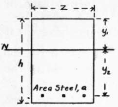
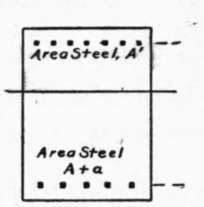
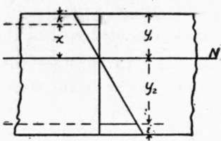
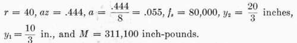
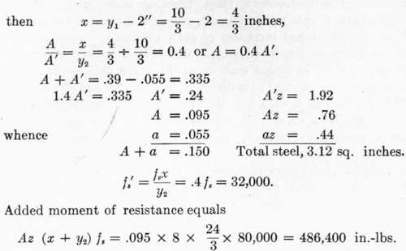

Art. 70. Concrete-Steel Beams With Double Reinforcement
Description
This section is from the book "Cement And Concrete", by Louis Carlton Sabin. Also available from Amazon: Cement and Concrete.
Art. 70. Concrete-Steel Beams With Double Reinforcement
598. We have seen that when the depth of a beam is limited by structural considerations we may increase the normal load by excessive reinforcement, but that this method results in low stresses in the steel and is not usually economical. We may now consider the effect of placing reinforcing rods in the compression side of the beam as well as in the tension side.
Fig. 14. CROSS-SECTION (Single Reinforcement).
Fig. 15. CROSS-SECTION (Double Reinforcement).
Fig. 16. STRAIN DIAGRAM.
Let Fig. 14 represent the cross-section of a beam reinforced on the tension side with sufficient steel, area a, to develop the proper working stresses in the materials, and let the position of the neutral axis be N N. If at distance x from the neutral axis we add an area of steel A' in the compression side, the position of the neutral axis would be changed for similar loading; but if at the same time we place in the tension side an additional area of steel A such that (A/A') = x/y2 the position of the neutral axis will be unchanged. Let fs' = stress in steel in compression; then since the steel must suffer the same deformation as the surrounding concrete fs/fs' = y2/x. Multiplying the last two equations, we have, fs A = f's A', that is, we have added equal forces to the two sides of the beam, and have increased the moment of resistance by fs A (x + y2) inch-pounds.
599. To illustrate the application of this principle we may take the beam considered in § 591, in which z = 8, R = 20:
When the area of reinforcement in the tension side of this beam was increased to az = 3.12 sq. in. or a = .39, the theoretical bending moment was increased to 522,000 inch-pounds (§ 592). What will be the result of a similar increase in steel distributed between the two sides of the beam?
Let k — distance from top of beam to center of reinforcement on compression side = 2 inches:
And total moment of resistance equals 311,100 + 486,400 = 797,500 inch-pounds.
None of the bars in the series mentioned in §591 had as large an area of reinforcement as 1.92 sq. in. on the compression side.
It is noticed, first, that the double reinforcement gives better results than such excessive reinforcement on the tension side; second, that the stress in steel on the compression side is less per square inch than that in tension; and third, that in case a large addition of steel is made, this results in a greater area of steel in compression than the total area of steel in tension. In practice the area of steel in compression is usually-made equal to, or less than, the area in tension, but beams with double reinforcement are seldom accurately designed.
Continue to:
- prev: Art. 69. Concrete-Steel Beams With Single Reinforcement. Part 4
- Table of Contents
- next: Art. 71. Shear In Concrete-Steel Beams